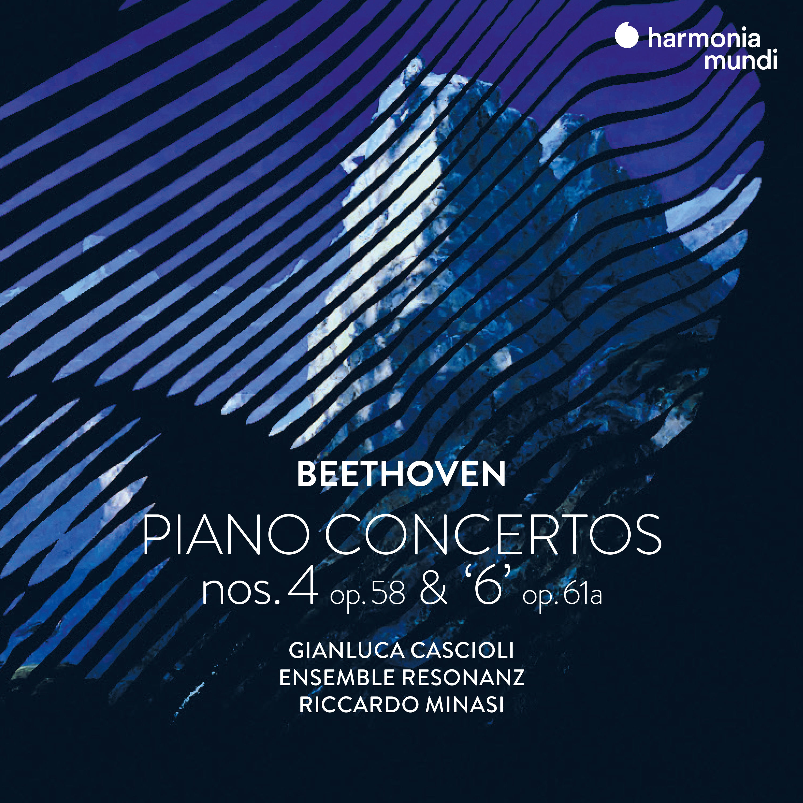
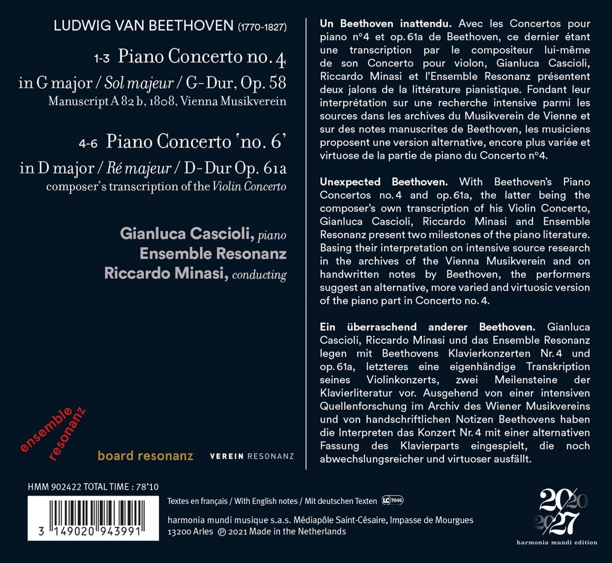

贝多芬第四钢协和第六钢协
这两天听了朋友介绍的一张新的唱片，虽然是门外汉只听个热闹，但因为实在是太好听了，也勉强能听得进去，算是附庸风雅听个寂寞吧。这张唱片是harmonia mundi公司2021年出版的贝多芬20/27出版计划中的一张，收录了两部作品，贝多芬：第四钢琴协奏曲op.58和“第六”钢琴协奏曲op.61a。
钢琴：Cascioli 指挥：Minasi 乐团：Ensemble Resonanz
根据唱片封底的简单介绍，“演奏者根据对维也纳音乐厅档案的深入研究和贝多芬的手写笔记，对第四钢琴协奏曲中的钢琴部分奉献了另一个更富变化和更有技巧的版本。”……“它们为钢琴作品录音文献库奉献了两部里程碑式的演奏。”
我做为门外汉，感觉这些信息太少了，于是在网上一通乱翻，找到了不少对这两部作品的介绍，东抄西凑地做个笔记如下。
1806年，贝多芬创作了两首协奏曲–《第四钢琴协奏曲》和《D大调小提琴协奏曲》作品61号。这两部作品都在刚刚完成不久后就被作曲家重新改编成了新的版本，这里介绍的就是这部被后来改编为钢琴协奏曲的op61。
据贝多芬的学生车尔尼（Carl Czerny）说，在1808年《第四钢琴协奏曲》的公开首演中，贝多芬在演奏钢琴部分时非常 “任性”，演奏的音符比印刷版的乐谱中的多得多。从贝多芬的一位抄写员抄写的管弦乐谱中可以清楚地看到有贝多芬手写的一些注释，可以大致说明贝多芬演奏时自由发挥的内容。专门研究贝多芬的学者Barry Cooper转录了这些乐谱和注释，他在转录时也做了大量丰富说明，他将这个后世很少录制的1808年版本的《第四钢琴协奏曲》描述为 “具有惊人的创造性 “， “比标准版本更加闪亮、精湛和复杂”。
作品61号协奏曲，最为世人熟知的是著名的《D大调小提琴协奏曲》，也是贝多芬唯一的一首小提琴协奏曲。但鲜为人知的是，在以小提琴协奏曲版本首演后不久，贝多芬就对乐曲的小提琴独奏部分为钢琴做了改编。当这部作品首次出版时，同时收录了小提琴与钢琴部分的乐章，使得这部《D大调协奏曲》的钢琴版本成为小提琴版之外的另一种演奏选择。本来贝多芬专为钢琴写的钢琴协奏曲只有五部，加上这一部就算是第六部了。这也是为什么唱片封面上的6是加了引号的原因。
值得注意的是，贝多芬并没有为小提琴版谱写华彩乐段，但他却为钢琴版创作了华彩乐段。我做为完全的外行，也能听出来这个钢琴版本的协奏曲与小提琴协奏曲有些不同，尤其是第一乐章的那段华彩特别引人注目，在钢琴的solo中加入了定音鼓的部分，与整部作品开头部分的定音鼓独奏相互呼应，这是小提琴版中没有的。